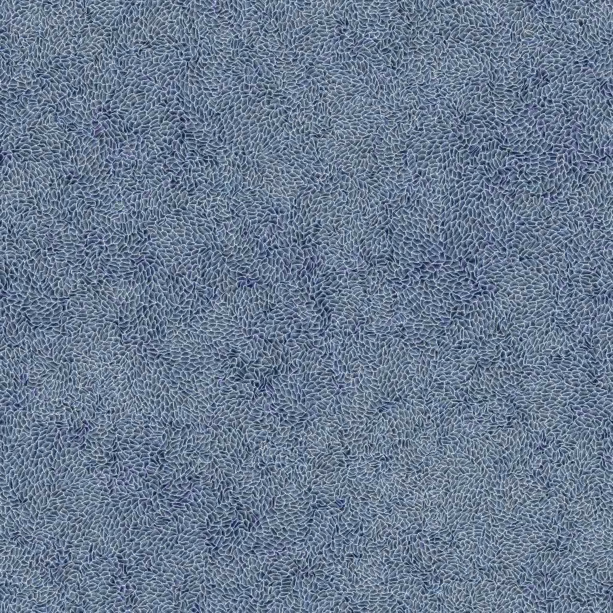
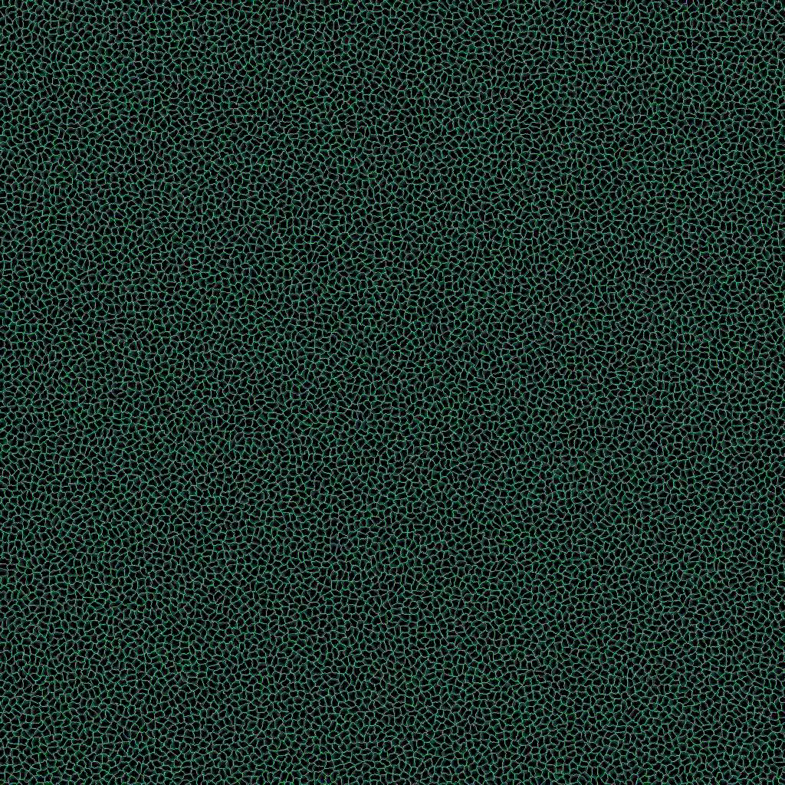
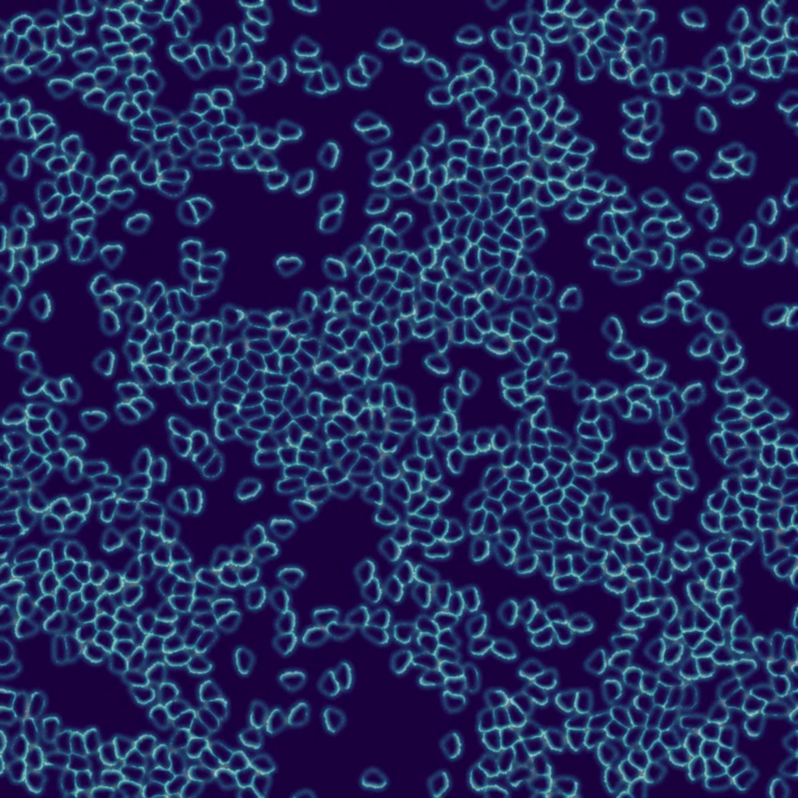
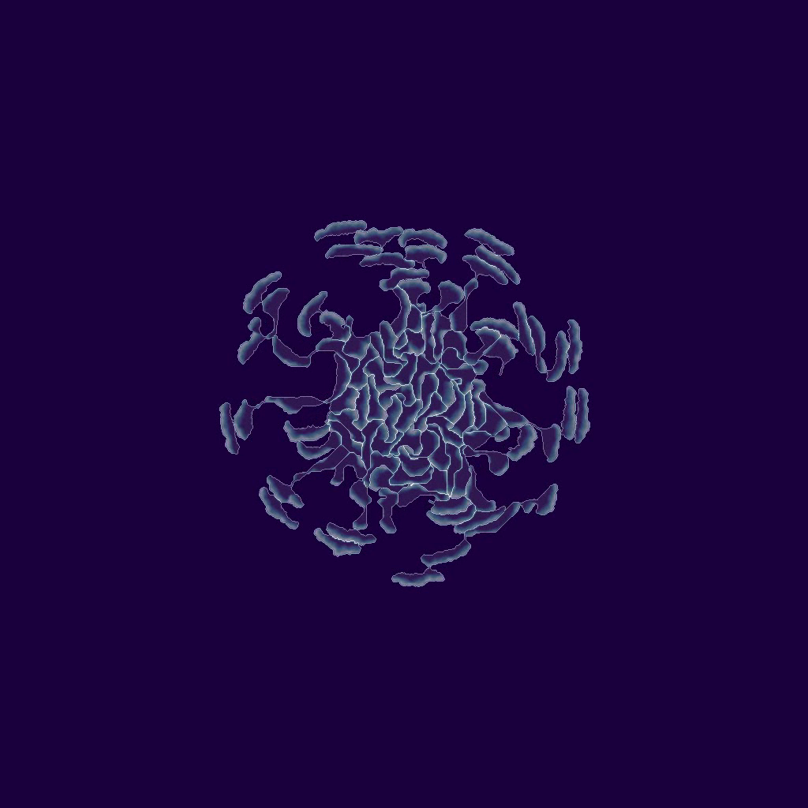

About me
I'm a PhD candidate at the Instituut Lorentz at the Universiteit Leiden from Amsterdam, The Netherlands, specialized in computational physics. Currently my work is on the large-scale simulations of biological cells in the research group of prof. Luca Giomi.
My background is in quantum physics, tensor networks, and emergent phenomena. I enjoy exploring non-linear complex systems that are difficult to study with analytics, and making them insightful with simulations and visualizations. Python and CUDA are the languages I use for my work.



